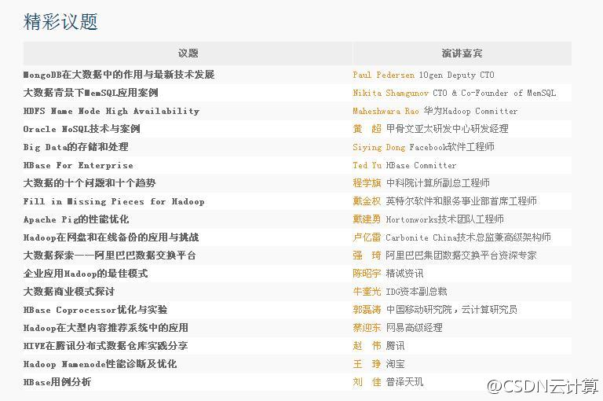

最后一轮召集了，这周五周六还有谁要去参会？网页链接@CSDN云计算:【技术为王，HBTC 2012重磅公布40位讲师及议题】11月30日-12月1日，中国IT界技术盛会——Hadoop与大数据技术大会将在京举行。目前，Hadoop生态系统，大数据行业应用，NoSQL、NewSQL、SQL与大数据，大数据共享平台与实践四大议题已经确定，首批40位演讲嘉宾及议题首次对外公布。@Hadoop中国 

 网页链接
网页链接